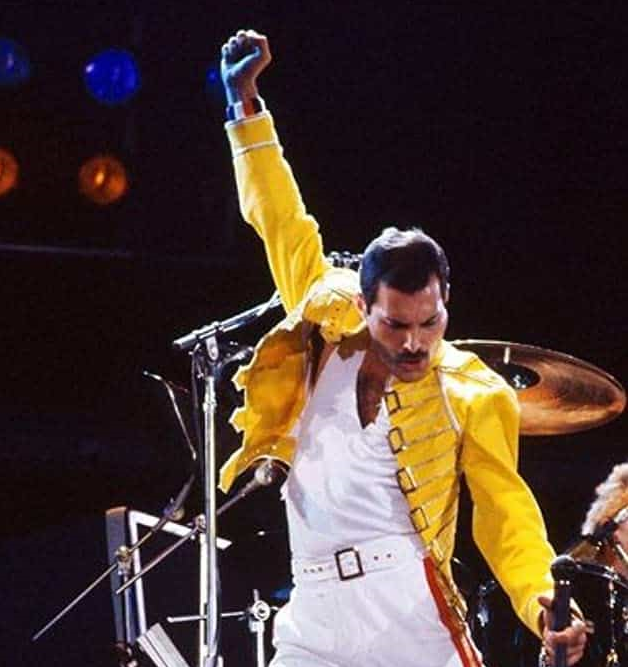

Freddie Mercury
1946-1991

"The most important thing is to live a fabulous live. As long as it's fabulous I don't care how long it is"
Freddie Mercury
Time Line
-
The life of Frederick Bulsara began on the East African island of Zanzibar on September 5, 1946.
25 years later in London under the name of Freddie Mercury he was fronting the now legendary rock
group named Queen.
-
The son of Bomi and Jer Bulsara, Freddie spent the bulk of his childhood in India where he attended
St. Peter’s boarding school. He began taking piano lessons at the age of seven. No one could foresee
where a love of music would take him.
-
The Bulsara family moved to Middlesex in 1964 and from there Freddie joined up with a blues band called
Wreckage while studying graphic design courses at Ealing College of Art. While singing for Wreckage, a
fellow student introduced Freddie to Roger Taylor and Brian May, founder members of a band called Smile.
Smile metamorphosed into Queen when Freddie joined Roger and Brian as the lead vocalist. The final member
of the band, which was to stay together for the next 20 years, was bassist John Deacon, who joined the band
on 1st of March 1971.
-
The rest is rock history. EMI Records and Elektra Records signed the band and in 1973 their debut album
‘Queen’ was released and hailed as one of the most exciting developments ever in rock music.
-
The immortal operatically styled single ‘Bohemian Rhapsody’ was released in 1975 and proceeded to the top
of the UK charts for 9 weeks. A song that was nearly never released due to its length and unusual style but
which Freddie insisted would be played became the instantly recognisable hit. By this time Freddie’s unique
talents were becoming clear, a voice with a remarkable range and a stage presence that gave Queen its colourful,
unpredictable and flamboyant personality.
-
Very soon Queen’s popularity extended beyond the shores of the UK as they charted and triumphed around Europe,
Japan and the USA where in 1979 they topped the charts with Freddie’s song ‘Crazy Little Thing Called Love’.
-
Queen was always indisputably run as a democratic organisation. All four members are each responsible for
having penned number one singles for the band. This massive writing strength combined with spectacular lights,
the faultless sound, a sprinkling of theatricality and Freddie’s balletic movements made up Queen on stage and
on film.
-
Through Freddie’s ability to project himself and the band’s music and image to the four corners of 70,000 seater
venues they became known as the prime developers of stadium rock, a reputation perpetuated by their pioneering tactics
in South America where in 1981 they performed to 231,000 fans in Sao Paulo, a world record at the time. They also became
known as the key innovators of pop videos as their catalogue of 3-minute clips became more and more adventurous in style,
size and content.
-
In the mid 80’s, Freddie started concentrating on his solo career, which was to run in tandem with Queen (“the mothership”)
for several albums commencing with the 1985 release of ‘Mr. Bad Guy’. Freddie’s much loved sense of self-parody reached a
zenith with his cover version of The Platter’s song ‘The Great Pretender’ in 1987, the video of which recorded him descending
a sweeping staircase among acres of identical cardboard cutouts of himself.
-
On November 24th, 1991, Freddie’s struggle against AIDS ended when he passed away just over 24 hours after he had publicly
announced he had the disease. Musicians and fans from all over the world paid their highest respects as the passing of rock’s
most innovative, flamboyant ambassador signified the end of an era at the Freddie Mercury Tribute Concert at Wembley Stadium on
April 20, 1992 which gave birth to the Mercury Phoenix Trust, the AIDS charity set up in Freddie’s memory by the remaining members
of Queen and Freddie’s Executor, Jim Beach.
-
Freddie Mercury, who majored in stardom while giving new meaning to the word showmanship, left a legacy of songs, which will
never lose their stature as classics to live on forever. Some of the most poignant of these were immortalised on the Queen
album ‘Made In Heaven’ released in November 1995. The sleeve of the album shows a view from Freddie’s Montreux home.
Read more about Freddie Mercury in Wikipedia